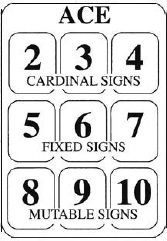

CHAPTER SIXTEEN

THE SPIRIT OF THE ACES
The Aces represent the roots of the four elements. They are quite above, and distinct from, the other small cards in the same way as Kether is said to be symbolized only by the topmost point of the god of Tetragrammaton. In these cards is no real manifestation of the element in its materialform. They form a link between the small cards and the Princesses, who rule the Heavens around the North Pole…both in their appearance and in their meaning, the Aces are not the elements themselves, but the seeds of those elements.185
You may think it odd that I begin my examination of the fifty-six cards of the Minor Arcana by first examining the four aces instead of the court cards. After all, aren't the aces simply the first of the small cards? I hope I didn't hear anyone ask that question. To say the ace is just the lowest-numbered tarot small card of its suit is like saying Kether is just the first sephira on the Tree of Life.
Ultimately, there are not fifty-six cards in the Minor Arcana of the tarot. There are only four—the four aces. The other fifty-two cards (the sixteen court cards and the thirty-six small cards), live inside the four aces. As we learned in chapter 8, if we look at the ace of any suit under a magic microscope, we first see the four court cards of that suit living comfortably inside. Let's not stop there. If we increase the magnification level of our microscope, we see that the nine small cards of the suit are nestled neatly inside in three rows of three cards. Isn't that tidy?
What does Crowley mean when he tells us that the aces are not the elements themselves, but the seeds of those elements? Qabalistically, the most obvious answer deals with the fact that Kether, the first sephira of the Tree of Life, is the inscrutable singularity of its particular world. As head honcho of the supernal triad, it is above, and distinct from, the other sephiroth that actually do all the manifesting in (and of) their respective worlds. Isn't that explanation kind of a cop-out, however? It sounds as if I'm just trying to explain something that is impossible to understand by giving an example of something else that is impossible to understand.

FIGURE 26. THE SMALL CARDS EMBEDDED IN THE ACE. IN IOo INCREMENTS, THE 2S, 3S, 4S REPRESENT THE CARDINAL ZODIAC SIGNS; THE 5S, 6S, 7S, REPRESENT THE FIXED ZODIAC SIGNS; THE 8S, 9S, 10S, REPRESENT THE MUTABLE ZODIAC SIGNS.
I didn't start to grasp this “root-of-the-elements” concept until I learned that physicists cannot properly define the nature of matter. They go as far as to tell us that the components of atoms (subatomic particles like protons, electrons, neutrons, and other strange things like quarks, and charm and quark-gluon plasma) aren't matter at all, but can only be described as nonmaterial “tendencies.”
What a perfect description of Kether! What a perfect description of the ace! It is that supremely fundamental tendency underlying a particular element. The Ace of Wands is not fire, but the tendency, or grouping of tendencies, to be fire and the suit of Wands.
Physicists theorize that these tendencies likely existed in their pure state in nature under conditions of extreme heat such as might have existed in the first milliseconds after the Big Bang. Accurately or inaccurately, the words these men and women of science are currently tossing about to describe these premanifestation tendencies that floated free in the immeasurable heat of creation are enough to make mystics of all schools stand up and salute: words like dark matter, mana, urmatter, quintessence, and (are you ready for this?) spirit!186
Tarot trump XX, the Aeon, represents the element of spirit. But, as we will see, it also does double duty on the Tree of Life and in tarot by representing the element fire. Perhaps this is the tarot's way of pointing to spirit's primordial home in the fire of creation itself, and how the aces can be the root of their element yet, as Crowley tells us, “quite above, and distinct from, the other small cards.”187
As we know, each ace enjoys a unique and very important relationship with the Princess of its suit. We touched on that relationship in chapters 8 and 11. The Princess is the throne of her ace and, when we consider one, we must by necessity think of the other. Hopefully, this connection will become clearer when we examine the court cards and small cards.
In some card games, aces are considered just the cards that come before the twos in value. In tarot, the aces are the gods of their suits and deserve some real respect. Let's take a look at them.